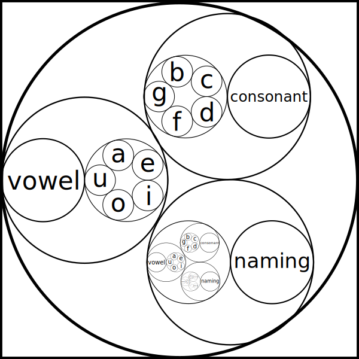

This software currently exists only as a set of design documentation rough drafts. No code has been written yet; don’t get too excited.
All of the images in this document are SVGs, meaning that when viewing in a browser you may zoom in and out without the images getting blurry. All images (unless stated otherwise) were drawn with the help of Inkscape.